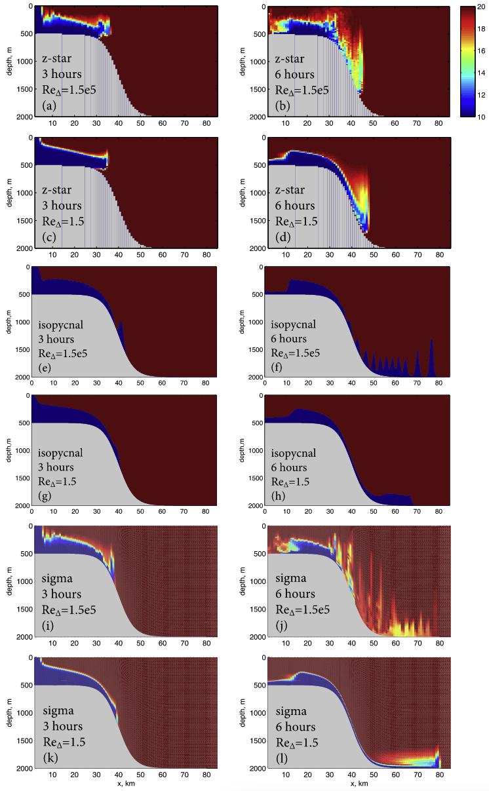

overflow
The ocean/overflow test group induces a density current flowing down a
continental slope and includes two test cases.
suppported models
These tasks support only MPAS-Ocean.
description
This test case derives from Petersen et al. 2015. A cold, dense block of water starts out on a flat continental shelf and flows down a continental slope, ending up along a deep, flat seafloor. This test case is generally used for evaluating spurious mixing associated with different vertical coordinate systems in the presence of bottom topography.
{kind=link}
mesh
The mesh is planar and the resolution is specified by config option
overflow:resolution, which defaults to 1 km.
The horizontal dimensions of the domain are set by config options
overflow:lx and overflow:ly, defaulting to 200 km by 40 km.
The domain is periodic on the zonal boundaries and solid on the meridional boundaries.
vertical grid
The topography includes a continental slope defined by
where \(z_{shelf}\) corresponds to config option overflow:shelf_depth,
\(z_{floor}\) to overflow:max_bottom_depth, \(x_{slope}\) to overflow:x_slope
and \(L_{slope}\) to overflow:L_slope.
Any vertical coordinate and number of vertical levels above the minimum needed for baroclinic dynamics may be used.
# Options related to the vertical grid
[vertical_grid]
# Depth of the bottom of the ocean (m)
bottom_depth = 2000.0
# Number of vertical levels
vert_levels = 60
# The type of vertical grid
grid_type = uniform
# The type of vertical coordinate (e.g. z-level, z-star)
coord_type = z-star
# Whether to use "partial" or "full", or "None" to not alter the topography
partial_cell_type = None
initial conditions
Salinity is constant throughout the domain (at 35 PSU). The
initial temperature is bimodal with low temperature throughout the continental
shelf region set by the config option overflow:low_temperature (default value of 10
\(^{\circ}\)C) and high temperature over the slope and deep ocean set by the config
option overflow:high_temperature (default value of 20 \(^{\circ}\)C). The transition between
the two zones is set by the config option overflow:x_dense (default value of 20 km).
This perturbation initiates slumping of the cold, denser water mass and flow
down the slope as a bottom boundary current.
The initial state is at rest. The coriolis parameter is set to 0.
forcing
N/A
config options
These config options are common to all overflow tests:
# Options related to the overflow case
[overflow]
# Timestep per km horizontal resolution (s)
dt_per_km = 10.
# Barotropic timestep per km horizontal resolution (s)
btr_dt_per_km = 2.5
# The width of the domain in the across-slope dimension (km)
ly = 40
# The length of the domain in the along-slope dimension (km)
lx = 200
# Distance from two cell centers (km)
resolution = 2.0
# Bottom depth at bottom of overflow
max_bottom_depth = ${vertical_grid:bottom_depth}
# Shelf depth (m)
shelf_depth = 500.0
# Cold water range (km)
x_dense = 20.0
# Lateral position of the shelf-break (km)
x_slope = 40.0
# Length-scale of the slope (km)
L_slope = 7.0
# Beta in eos
eos_linear_beta = 0.8
# Initial salinity throughout the domain (PSU)
salinity = 35.0
# Reference salinity (PSU)
eos_linear_Sref = ${overflow:salinity}
# Lower temperature (deg C)
lower_temperature = 10.0
# Higher temperature (deg C)
higher_temperature = 20.0
The linear EOS is used because it is convenient for computing RPE. The
namelist parameters for the linear EOS can be altered using config options
overflow:eos_linear_beta and overflow:eos_linear_Sref.
cores
The number of cores is determined by goal_cells_per_core and
max_cells_per_core in the ocean section of the config file.
default
description
The default case is the same as described above except the run is stopped before it is allowed to reach equilibrium to facilitate rapid testing.
mesh
See overflow.
vertical grid
See overflow.
initial conditions
See overflow.
forcing
See overflow.
time step and run duration
The time step for forward integration is set by dt_per_km and the model
resolution. The barotropic time step is 15s. The run duration is 12 minutes.
config options
The config options specific to the default case are:
[overflow_default]
# Run duration (minutes)
run_duration = 12.
# Output interval (seconds)
output_interval = 1.
Include here any further description of each of the config options.
cores
See overflow.
rpe
description
The rpe case is the same as the default except it runs to 40 days by which
time the dense blob is mostly at depth. It also includs several forward runs
corresponding to different values of the laplacian viscosity specified by the
config option overflow_rpe:viscosities. The analysis step is a substitute for the viz step as
it includes the same cross-section visualizations of temperature but also
includes a computation and plot of the evolution of the Resting Potential
Energy (RPE) for each forward run.
{kind=link}
{kind=link}
config options
The config options specific to the RPE case are:
[overflow_rpe]
# Run duration (days)
run_duration = 40.
# Output interval (days)
output_interval = 1.
# Viscosity values to test for rpe test case
viscosities = 1, 5, 10, 100, 1000
# The time at which to plot cross-sections in the analysis step (days)
plot_time = ${overflow_rpe:run_duration}